01Otel binası · Sultanahmet, İstanbul
AJWA Sultanahmet
Cephe fotoğrafları, OpenStreetMap bina izi ve kuşbakışı görüntüden. Pahlı köşe, giriş köşkü ve iki kademeli mansart çatıyla, gece ışığında.
- 30 × 17 m
- 8 kat
- Gece
- Fotoğraf + OSM
perArt · izometrik 3D maketler
Bir otel binası, bir Kapadokya arazisi, bir otel odası ve bir süpermarket. Hepsi plandan, fotoğraftan ve uydu görüntüsünden ölçüsüne sadık kuruldu; ışıkları Blender'da hesaplandı.
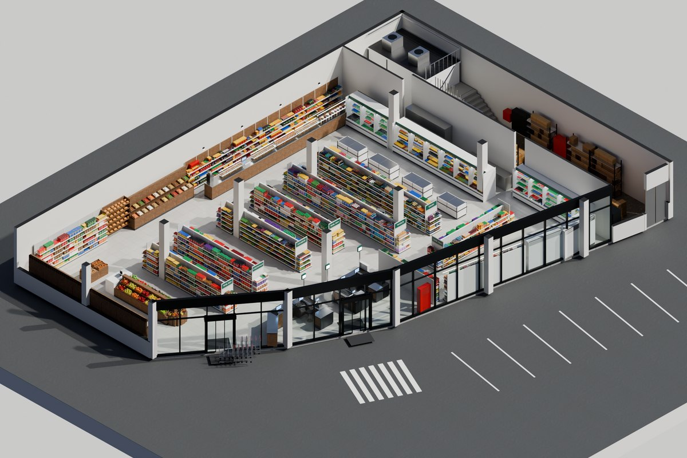
Projeler
Bir AutoCAD çizimi, bir otelin fotoğrafları, bir uydu görüntüsü. Bir maketin üzerine tıklayın, yukarıdaki sahnede açılsın.
01Otel binası · Sultanahmet, İstanbul
Cephe fotoğrafları, OpenStreetMap bina izi ve kuşbakışı görüntüden. Pahlı köşe, giriş köşkü ve iki kademeli mansart çatıyla, gece ışığında.
02Otel ve arazi · Kapadokya
Uydu görüntüsü ve yerleşim planından; peri bacalı arazi, yollar, mağara süitler ve ağaçlar.
03Otel odası · AJWA Sultanahmet
Odanın kendi fotoğraflarından. Numaralı noktalara dokunun, maket o eşyaya yaklaşsın.
04Süpermarket · yerleşim planı
Bir AutoCAD çiziminden: gondol modülleri, gömülü kolonlar, U kasalar, soğuk odalar ve depo birebir. İçeri girip reyon reyon gezilebiliyor.
Yakından: süpermarket
Solda gelen plan, sağda aynı ölçek ve hizada maketin tepeden renderı. Çizgiyi sürükleyin, her rafın yerine oturduğunu görün.
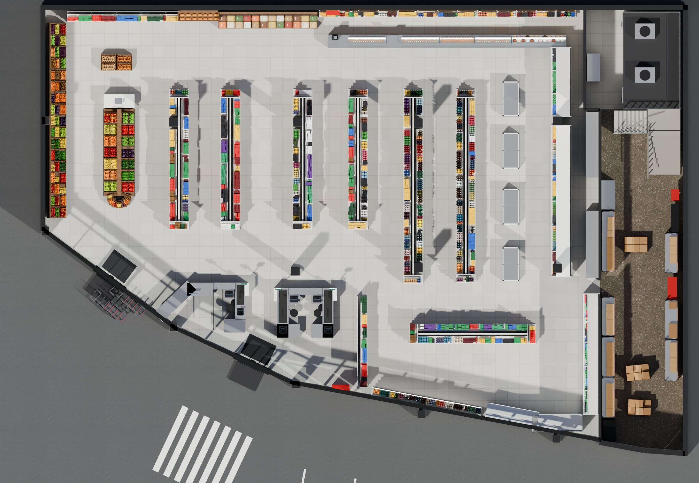
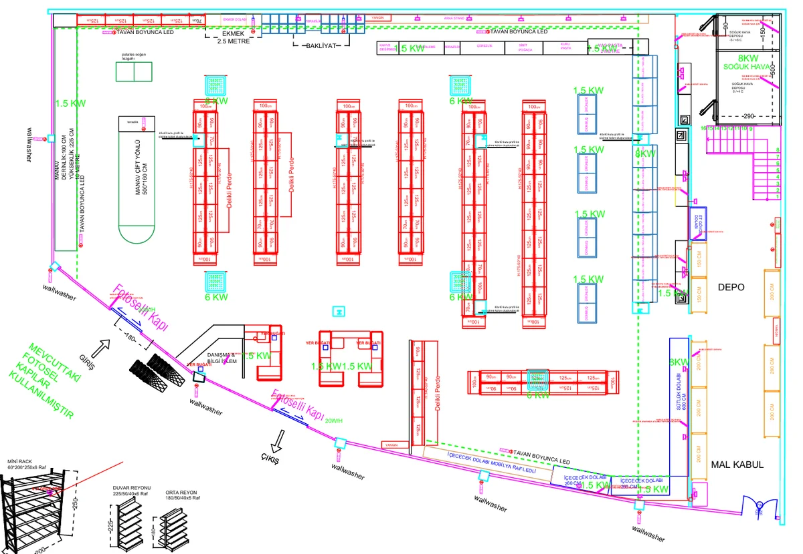
Nasıl çalışıyoruz
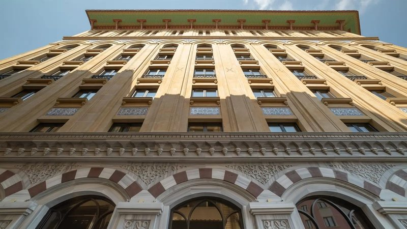
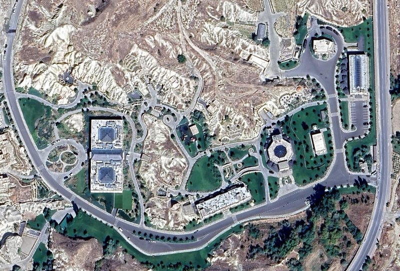
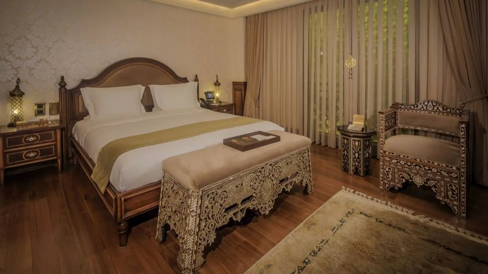
Bir AutoCAD planı, bir otelin cephe fotoğrafları, bir uydu görüntüsü ya da odanın kendi fotoğrafları. Ölçeği yazılardan, modüllerden ve bilinen ölçülerden çıkarıyoruz; belirsiz kalan yerleri size soruyoruz.
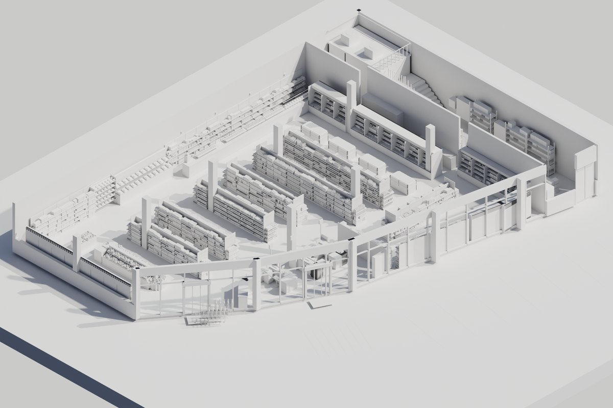
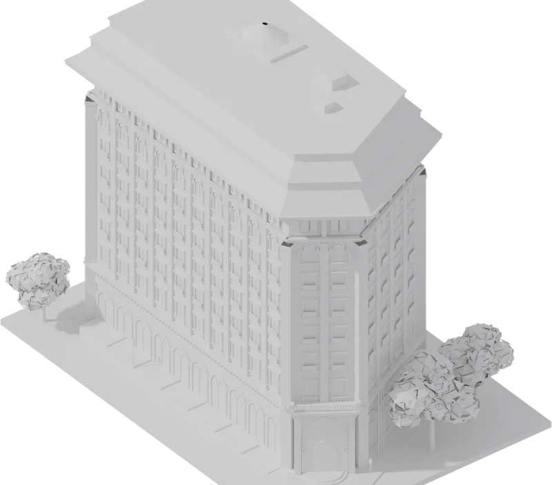
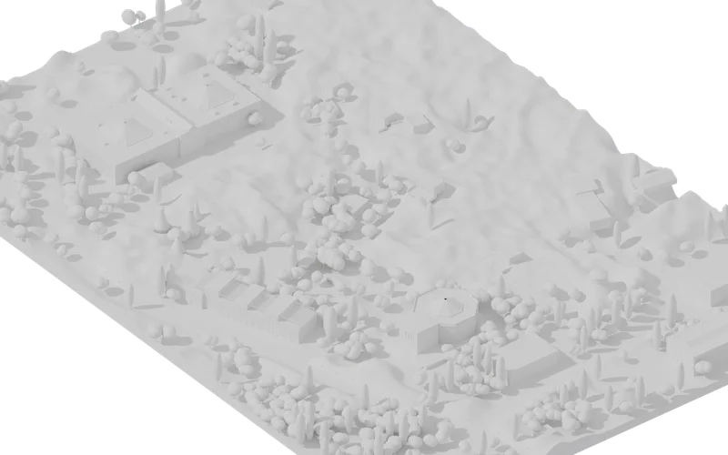
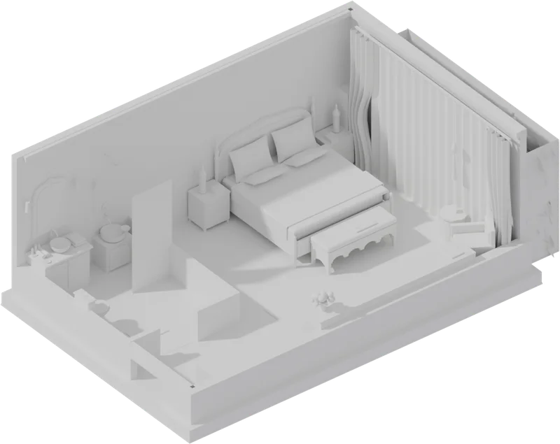
Duvarlar, cepheler, eşyalar ve arazi kaynağındaki yerine oturuyor. Önce malzemesiz, beyaz kil maket: maketi kaynağın üstüne bindirip kontrol ediyoruz; plan çizgisi, fotoğraf açısı ya da uydu ölçeği.
Gerçek dokular ve malzemeler; gündüz ya da gece ışığı Blender Cycles ile yol izleme yöntemiyle hesaplanıp maketin üzerine işleniyor. Sokak fenerinden tül perdeden süzülen güne kadar.
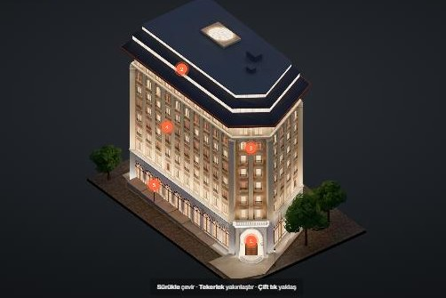
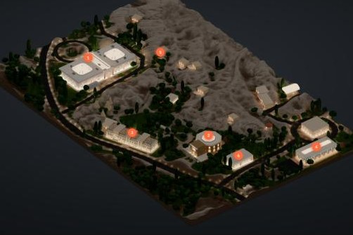
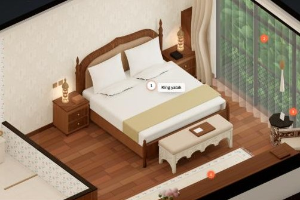
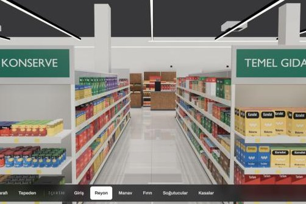
Fotogerçekçi renderların yanında tek bir link: bilgisayarda, tablette ve telefonda açılan, çevrilip yakınlaştırılabilen maket. Numaralı noktalar, hazır bakışlar; isterseniz kendi sitenize de yerleştirilir.
Neler teslim ediyoruz
Kuşbakışı maket görünümleri ve göz hizasında kareler, 4K. Sunum, katalog ve sosyal medya için hazır.
Tarayıcıda açılan, uygulama gerektirmeyen maket. Tek linkle paylaşılır ya da sitenize gömülür.
Kaynaktan çıkardığımız ölçü ve donatıların listesi; eksik ya da çelişkili gördüğümüz yerler ayrıca bildirilir.
Yerleşimi, malzemeyi ya da ışığı değiştirmek isterseniz maket, renderlar ve canlı model birlikte güncellenir.
Sık sorulanlar
AutoCAD dosyası (DWG, DXF), PDF plan, binanın ya da odanın fotoğrafları veya bir uydu görüntüsü. Bu sitedeki dört maketin her biri farklı bir kaynaktan kuruldu.
Ölçeği kaynaktaki yazılardan ve bilinen ölçülerden çıkarıyoruz, sonra maketi kaynağın üstüne bindirip kontrol ediyoruz. Süpermarket projesindeki kaydırıcıda bu karşılaştırmayı kendiniz görebilirsiniz.
Güncel bir tarayıcısı olan bilgisayar, tablet ve telefonda. Uygulama kurmak ya da hesap açmak gerekmez; maket kendi sitenize de yerleştirilebilir.
Evet. Logonuz, tabelalarınız, kurumsal renkleriniz ve ürün görselleriniz maket üzerine işlenebilir. Süpermarket örneğindeki ambalajlar temsilîdir.
Evet. Canlı maket yalnızca sizinle paylaştığımız bir linkte durur ve arama motorlarına kapalıdır.
Başlayalım
Elinizdeki kaynağı ve birkaç cümlelik notunuzu iletin; ölçek, eksikler ve teslim tarihiyle birlikte dönelim.